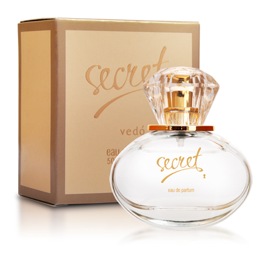

Элитная коллекция духов VP
Ароматы для женщин
Ароматы для мужчин
Ароматы с феромонами
Элитная коллекция VEDO
Декоративная косметика
|
|

|
Дуэт экзотических цветов и фруктов с сахарными аккордами.
Это подарок молодому поколению женщин,
обладающих способностью выражать свою внутреннюю свободу
в современном и модном стиле.
Восточное, расцвеченное прохладой благоухание,
революционно и неординарно воплощает игру обольщения,
полную интриг, сюрпризов и тайн.
Характеристика: сладкий, соблазнительный, спонтанный.
Семейство ароматов: древесные цветочные.
Начальная нота: игристый розовый грейпфрут, сицилийский бергамот.
Нота «сердца»: листья смородины, сахарная орхидея, белый кактус.
Конечная нота: амбра, ванильное суфле, древесина красного кедра.
|